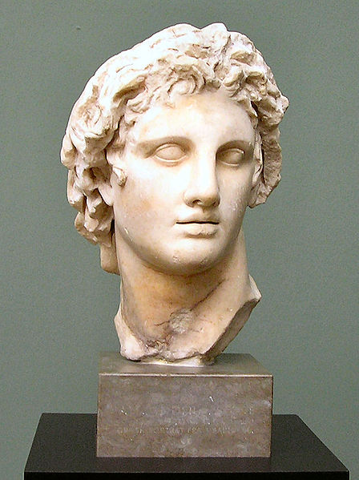
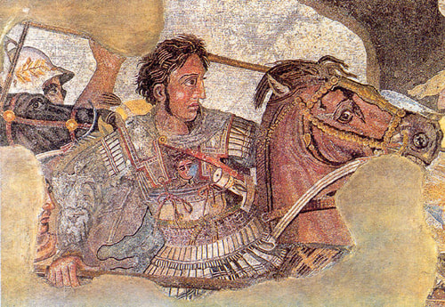
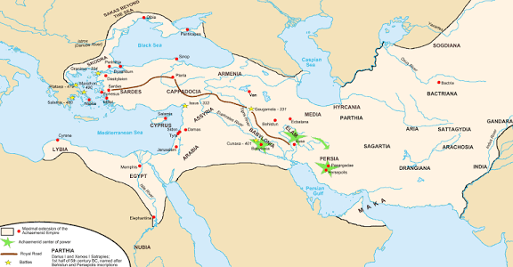

Aprenda mais sobre a história de Alexandre e a Macedônia explorando os catálogos principais no menu!

Nascimento e origens
Alexandre, o Grande nasceu em 20 ou 21 de julho de 356 a.C. na cidade de Pela, capital do antigo Reino da Macedônia, localizado na região norte da Grécia atual. Era filho do rei Filipe II da Macedônia e da rainha Olímpia de Épiro. Seu pai foi um dos maiores estrategistas militares de sua época e transformou a Macedônia em uma potência regional. Sua mãe, pertencente à família real de Épiro, influenciou profundamente sua formação, transmitindo-lhe a crença de que possuía uma origem quase divina. Diversas lendas cercam seu nascimento. Uma delas afirmava que sua mãe teria sido visitada por Zeus sob a forma de um raio, reforçando a ideia de que Alexandre teria uma ligação especial com os deuses.

Infância e educação
Alexandre recebeu uma educação refinada para os padrões da época. Desde cedo demonstrou inteligência excepcional, curiosidade intelectual e grande ambição. Quando tinha cerca de 13 anos, seu pai contratou o filósofo Aristóteles para educá-lo. Durante vários anos, Aristóteles ensinou ao jovem príncipe filosofia, medicina, política, literatura, ética, geografia e ciências naturais. Alexandre admirava especialmente a obra épica Ilíada, de Homero. Seu herói favorito era Aquiles, cuja coragem e glória procurou imitar durante toda a vida. Uma história famosa de sua juventude relata que ele domou um cavalo considerado indomável chamado Bucéfalo. O animal tornou-se seu companheiro inseparável em muitas campanhas militares.

Juventude e ascensão ao poder
Ainda adolescente, Alexandre começou a participar da administração do reino. Aos 16 anos, foi deixado como regente enquanto seu pai conduzia campanhas militares. Em 338 a.C., participou da decisiva Batalha de Queroneia, na qual as forças macedônicas derrotaram uma coalizão de cidades gregas. Alexandre comandou parte da cavalaria e demonstrou grande talento militar. Dois anos depois, em 336 a.C., seu pai foi assassinado durante uma cerimônia pública. Com apenas 20 anos, Alexandre assumiu o trono da Macedônia. Sua sucessão não foi tranquila. Houve rebeliões internas e tentativas de independência por parte de cidades gregas. Alexandre respondeu rapidamente, consolidando seu poder. Uma de suas ações mais marcantes foi a destruição da cidade de Tebas em 335 a.C., após uma revolta contra seu domínio. O episódio serviu de advertência para outras cidades gregas.

A conquista do Império Persa
O grande objetivo de Alexandre era concretizar o plano de seu pai: conquistar o vasto Império Aquemênida. Em 334 a.C., atravessou o estreito do Helesponto e iniciou sua campanha na Ásia com aproximadamente 40 mil soldados. Batalha do Grânico (334 a.C.) Sua primeira grande vitória ocorreu na Batalha do Grânico, onde derrotou forças persas na Ásia Menor. Batalha de Isso (333 a.C.) No ano seguinte enfrentou o rei persa Dario III na Batalha de Isso. Apesar da inferioridade numérica, Alexandre obteve uma vitória decisiva. Dario fugiu do campo de batalha, abandonando inclusive parte de sua família.

A campanha da Índia
Em 327 a.C., Alexandre iniciou sua famosa expedição rumo ao subcontinente indiano. Seu maior desafio ocorreu na Batalha do Hidaspes, contra o rei Poro. Mesmo vencendo a batalha, os soldados macedônios estavam exaustos após anos de guerra. Quando chegaram ao rio Hífase, recusaram-se a avançar mais para o leste. Diante da resistência de suas tropas, Alexandre foi obrigado a retornar.

Últimos anos e morte
Após retornar da Índia, Alexandre estabeleceu-se em Babilônia. Em maio ou junho de 323 a.C., aos 32 anos, adoeceu repentinamente após vários dias de febre intensa. A causa exata de sua morte permanece um mistério. Entre as hipóteses mais discutidas pelos historiadores estão: Malária; Febre tifoide; Infecção bacteriana; Pancreatite; Complicações decorrentes de ferimentos acumulados; Outras doenças infecciosas. As teorias de envenenamento são populares, mas a maioria dos especialistas modernos considera essa hipótese pouco provável. Alexandre morreu em 10 ou 11 de junho de 323 a.C., na cidade de Babilônia, na região correspondente ao atual Iraque.